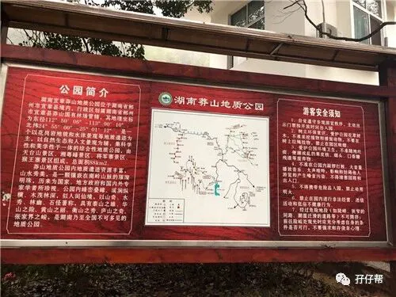
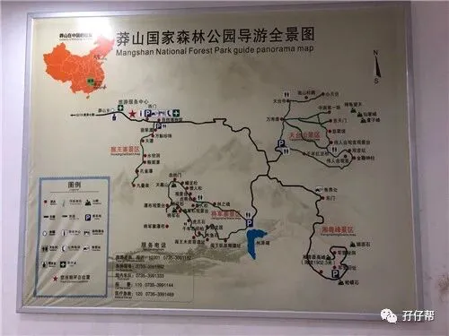
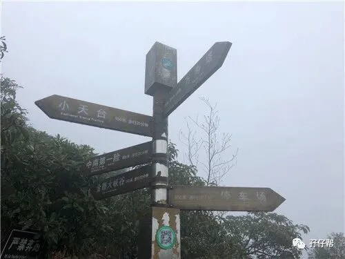
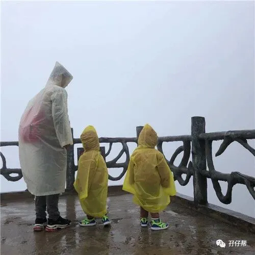
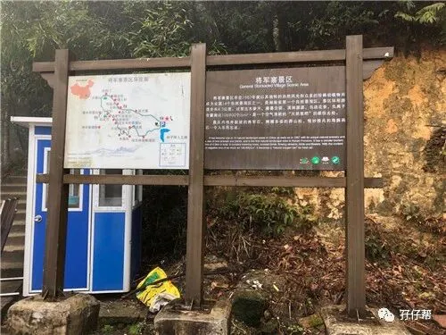
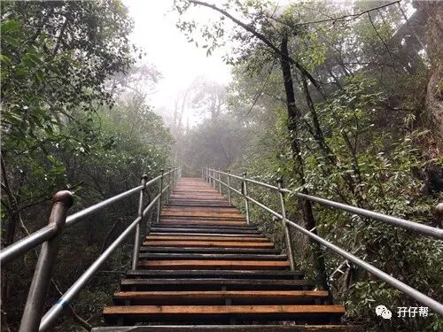
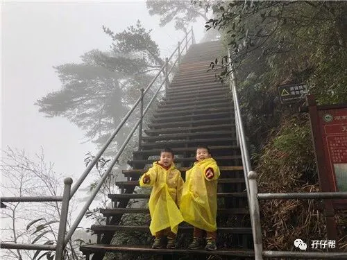
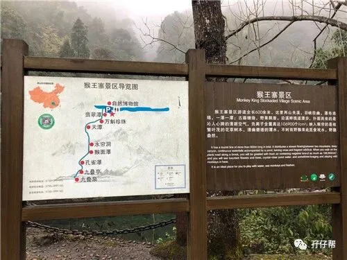
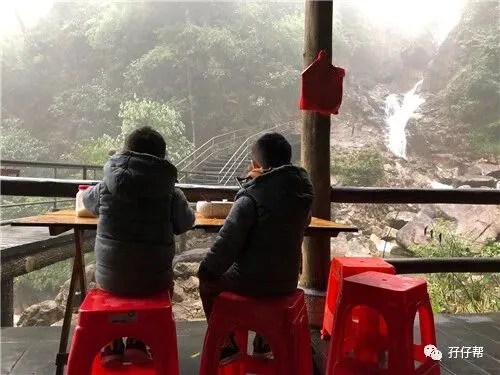

背景: 圆圈3岁6个月
地点：湖南·郴州·莽山国家森林公园
人物：双胞胎兄弟圆圆&圈圈，圆圈爸和圆圈妈
文|圆圈妈，一个文思如尿崩的双胎妈妈
图|圆圈妈
· 正 · 文 · 来 · 啦 ·
首先，这是一次失败的莽山之旅。
因为遇上大雾，山顶上白茫茫的一片，能见度极低，基本上看不少什么，山上还飘着雨雪，超级冷！
网上攻略里提到的雾凇奇观，漫山遍野的银装素裹和玉树琼枝均无缘看到。
但，这也是一次不错的体验，大雾笼罩下的莽山，有一种神奇的魅力！
这篇游记是冬季的莽山两天一夜游，有兴趣带着孩子去莽山大雾中探险的家庭可参考此篇攻略。
#吃住#
莽山景区门口不远处就有许多客栈酒店民宿，价格150—300元不等，若预算有限，可以住在距离景区较远一点的村里。
我们对住处的要求不高，选了家离景区较远的民宿，104元一晚，房间设施基本上标配，谈不上豪华舒适，能凑合。
莽山的配套设施挺成熟的，景区附近就有很多农庄，土家菜馆，如果不介意价格，基本上不愁吃！
我们在一家瑶家菜馆点了两个炒菜，一荤一素，78元。
早餐基本上是粉面居多，一碗8元—10元，分量一般般，味道马马虎虎， 反正管饱就行了。
#门票#
冬季的莽山是淡季，成年人票价65元一张，身高低于1.2米的儿童免费，此费用只是大门票的费用，不包含景区游览车，景区游览车票价58元一张。
如果对自己的车技有信心，也可以自己开车进去，网上的攻略说自驾车要收费60元一辆车，但可能是淡季，我们开车进入景区并没有收费。
☞☞TIPS☜☜:
游览车很难等，如需用车还要打电话给调度室，凑齐人才能走，非常不友好。
若是淡季去，建议自驾车上山，每一处景点都有停车场，不用担心停车问题。
山路崎岖，随时都是360度大转弯，非常惊险刺激，要不是有大雾遮住视线，看到那万丈深渊，真的会腿抖。
对驾车技术没有把握的新手司机，为了生命安全，还是乖乖坐游览车上去哈！
#景点#
莽山的景点主要有猴王寨，将军寨，天台山，湘粤峰。
每个景点都很分散，这就是为什么建议自驾车上山的原因，时间随你安排，不用等待，想去哪个景点都可以。
我们第一天去了天台山---将军寨，第二天猴王寨，湘粤峰因为天气不好，放弃了。
①天台山
有道是“不上天台山，不识莽山貌”；“不到天台山，枉为莽山客”，人们把天台山称为天台山第一仙境。
这也是为什么我们毫不犹豫直奔天台山的原因。
从景区入口（西门）开车到天台山停车场大约要30分钟， 过了天台山和将军寨的三岔路，山路变窄，越来越陡峭。
到了停车场，正好下雨了，看到雨雾萦绕的天台山，白茫茫的一片，心里凉凉的，这天气看毛线风景啊！
罢了，既然来了，就上吧！而且圆圈兄弟看到少见的雨雾天非常兴奋，吵着穿上雨衣去森林里探险。
只好祈祷山上的天气可以转晴。
全副武装后，我们两大两小开始往小天台出发，不到十分钟就到达万寿塔。
很遗憾，雾气依然没有散去，反而愈演愈烈，难怪没什么游客，我们都觉得很扫兴。
要不是偶尔有三三两两的旅游团经过，我们真以为整座山头都是我们一家四口的了。
跟着人群，我们继续往小天台方向走，路上看到一群人，貌似某个公司搞团建，全都披着清一色雨衣，经过天台寺时，咋一看以为是哪个教会在朝拜！
大约10分钟分钟就到了小天台观景台，这时雨越下越大，还伴有大风夹着雨使劲吹，冷！冷！冷！拿着手机的手瞬间冻僵了。
眼前白茫茫，灰蒙蒙的一片，什么都看不清，看来传说中的云雾萦绕，云海翻涌，腾云驾雾可遇不可求啊！
我们追上一小哥给我们拍了张全家福，就赶紧往回走。
折返去中南第一险的路上，再次经过天台寺，看到雾气散去一片，万寿塔在远处清晰可见，这个角度看，超美！但是很快，另一波雾气很快又袭来了。
看来，看莽山美景全靠运气！
从万寿塔上去中南第一险，约10分钟路程，很遗憾，依然是漫山遍野的雾！但还是能感觉到脚下的万丈深渊，寒气逼人。
因莽山在申请5A景区，部分观景台在维护升级中，很多景点都被挡板拦住不让进入！
此时是中午12点多，圆圈兄弟早已饿得慌，嚷嚷着要去车上吃东西。
于是，只能败兴而归。
☞☞TIPS☜☜:
天台山停车场不大，车位有限，难怪十一黄金周不让私家车上山，庆幸现在是淡季，游客不多，车随便停！
雨雾天气去莽山记得带上防水手机套，山上非常冷，做好保暖措施。
山上没有饱肚子的食物，只看到一处小摊贩在卖零食和豆腐花，建议多备点面包干粮，出发前多吃点，特别是要把孩子给喂饱，才能应付长时间的行走。
雨雾天气的莽山，到处都是湿漉漉的，除了雨具必备，还要多备一双鞋子， 以备不时之需。
②将军寨
在车上美餐一顿，继续前往将军寨，从天台山到将军寨停车场，自驾车约30分钟车程，其实挺近的，但山路崎岖，不敢玩漂移。
圆圈兄弟非常喜欢这种在车上被晃来晃去的刺激感，每转一个弯，这两个二货就很默契地大笑一声。
好在有他们魔性的笑声陪伴着，不然真的没啥心情，在这样恶劣的天气逛莽山。
将军寨景区是一段环回步行径，主要看原始森林。
有石梯栈道和木栈道，全长4.3公里，古木参天，藤蔓交错，溪涧潺潺，鸟语花香。
我们走在毫无特色的石头小路上，看着枯枝古树和小溪流，有点昏昏欲睡，很想打道回府。
走到将军石观景台时有一大姐正好从木栈道那边下来，操着浓重的港式普通话问：“你哋系打算带着小孩子去看瀑布吗？”
我们都很疑惑地看着两腿正在发抖，好像经历一场劫难似的她惊恐地说：“千企不要带小孩子走那段木栈道了，太陡了，太危险了。”
我们带圆圈兄弟第一次爬山时，他们才2岁半，被很多人阻止过，认为我们不可能成功，孩子不可能自己爬上那么陡的山，可是我们依然前行而且成功走过了很多大小名山。
这次也不例外，我们依然不为所动。
谢谢她的好意！圆圈兄弟不一样！
在瀑布观景台给圆圈吃了点零食，鼓舞下士气，继续往号称很陡，很危险的木栈道走去。
此时雾气越来越大了，刚刚还有几个游客经过，这会儿就只剩下我们四个人了，越往上走，就越觉得心慌。
很快，我们终于见识到把那位大姐吓到两腿发软的木栈道，真的是太陡了，目测80°角，最刺激的是这些木板都是凌空搭建在悬崖上。
突然很庆幸雾大，完全看不清脚底下是什么情况，反正只需要往前走，别掉下去就行！
走到自然门，圈圈体力不支睡着了，圆圈爸只好负重前行。
此时快接近五点钟了，天色渐渐暗下去了，我们已经无暇观景了，也没有美景可观，眼前的一幕就好像白色幕布一样，到哪都是白茫茫的一片。
木栈道走完后就是一段原始的山路，前后左右都没有其他游客，也没有路牌指引，好几次我们都以为迷路了，好在有零星的几处垃圾桶给我们指路。
圈圈没有睡醒，一直哭闹，好在圆圆一直表现很棒，拉着我的手，紧随我的脚步，让我放心多了。
终于看到停车场那一刻，我长吁一口气，真担心就这样迷失在山上，下次可不能那么任性了！
☞☞TIPS☜☜:
将军寨环回步行一圈至少需要2个小时，带着孩子去一路走走停停，得至少预备3个小时。
部分木板栈道的边边角角长满青苔，一定要牵着孩子，让孩子走中间。
林之魂那段路都是竹林山路，若是夏天应该很多蚊虫，记得带驱蚊水，穿长袖衣服。
将军寨号称原始森林，总有路牌提示有黑熊，老虎，毒蛇出没， 建议结伴而行，带着孩子的家庭也尽量跟着人群走，不要落单。
我们走到林之魂那段路就只剩下我们一家四口了，真的有点怕怕的，要是真跑出个动物，我真的没有信心保护哥俩周全。
将军寨的停车场比较大，附近还有小型的商业街，卖特产和美食，还有农庄餐馆，可稍作休息，补给食物。
警惕温柔的陷阱，我们刚下车就被一大叔热情地邀请去店里喝蜂蜜水，还很积极给我们介绍将军寨的景点。
好在我们见多了这些温柔的套路，圆圈兄弟在我们的教育下也很礼貌地拒绝了大叔递过来的茶水。
多次的旅途总结，不要轻易接受陌生人的好意。
不然，吃人家的嘴短，拿人家的手软就会在你身上体现得淋淋尽致。
将军寨的石梯游道那边没什么看点，除了树木长得有点看头，其实跟逛公园没什么两样，若是时间紧迫，可以忽略，抓紧时间去最精华的木栈道。
将军石到点将台之间那段路是沿着悬崖峭壁架设的天梯，贼刺激，若不是有雾遮住视野，不知者无罪，真的胆小勿入。
③猴王寨
第二天，雾气依然很重，想起昨天的狼狈，已经没啥心思继续游玩了。
想起景区入口不远处还有一个自然博物馆，就索性去看看吧！
很遗憾，博物馆没有什么看点，二楼的莽山烙铁头蛇蛇馆管也闭门修整中。
一楼时候动物馆，陈列着一些动物标本，可以带孩子去拍照。
我们觉得很扫兴，正准备离开，一清洁工阿姨看到我们带着双胞胎孩子，特意带我们穿过博物馆去看铁笼子里的猴子。
果然，圆圈兄弟跟猴子们很亲热啊！站在那里不愿意离开。
博物馆后面就是猴王寨景区，经过一座摇摇晃晃的索桥就是猴王寨游道的入口。
猴王寨主要是看瀑布，一路都是石梯路，全长600多米，两山夹溪，谷峡径幽，瀑布连绵，古藤缠绕，野果飘香。
可惜了这样的美景，圈圈可能昨晚没有睡好，一直在闹，最后破例给他们吃口香糖才得以继续前行。
猴王寨尽头就是九叠泉，是所有瀑布中的压轴景点，附近有休息亭，可以坐下来吃点豆腐花，来点温热的姜糖水和当地的土特产。
我们买了一碗豆腐花，老板娘人很好，给他们哥俩一人一碗，双胞胎的好处就是去到哪里都有特殊待遇，哈哈！
圆圈兄弟一边吃一边欣赏着倾泻而下的九叠泉，好不惬意啊！
雨雾中的莽山笼罩在一片雾气中，若隐若现，特具韵味，好像一幅纯天然，不加修饰的山水画。
☞☞TIPS☜☜:
猴王寨游道两侧都有护栏，但是围栏的开口较大，很容易摔倒掉落。
所以一定要时刻牵着孩子，别松手，拍照时也要确保孩子在安全范围内。
猴王寨游道只能原路返回，来回走下来，耗时约1小时足以。
中午十二点，雾气依然没有散去，还下起了小雨，圆圈兄弟一直在闹，只好返程，提前结束旅程。
-END-
重磅互动
#你希望写什么育儿经验干货？#
评论区聊一聊
随便提，万一下篇就写了呢？
关于这个号
谢谢关注！
我是圆圈妈
85后，全职妈妈
家有孖仔两枚，圆圈&圈圈
双胞胎育儿公众号：孖仔帮
ID:twinsbang
旨意分享双胞胎育儿经验帮助双胞胎家庭
有经验可循
有组织可靠
希望我的经验对您有所启发
期待与您一起共享双胞胎育儿经










